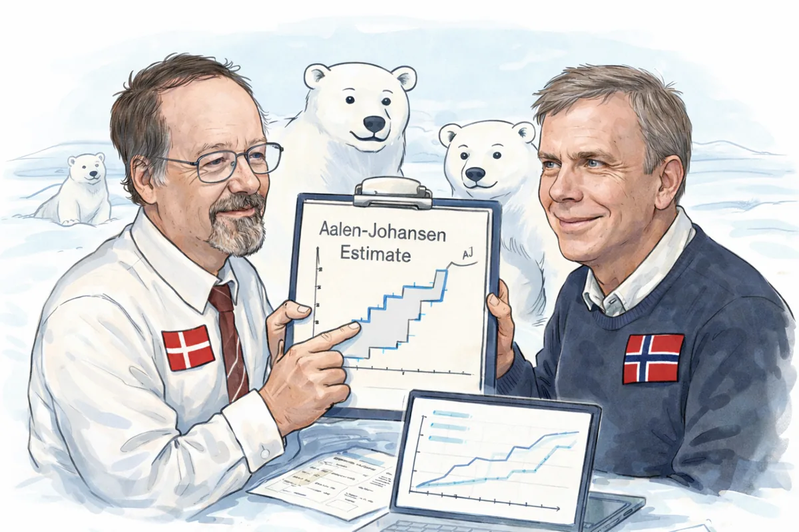

flowchart LR
O["Under observation"] -->|"Code 0"| C["Right-censored"]
O -->|"Code 1"| E["Event of interest"]
O -.->|"Optional code 2"| R["Competing event"]
style O fill:#dff3f8,stroke:#1f5f82
style E fill:#e3f4ea,stroke:#287a4b
style R fill:#f8e8ef,stroke:#9b4668
How the Estimator Works
Understand the calculation and the tables returned by polarstate.
The Aalen-Johansen estimator generalizes Kaplan-Meier reasoning to one or more absorbing outcomes. In polarstate, code 0 means that follow-up ended without an observed event, code 1 is the event of interest, and optional code 2 is a competing event.

Codes 0 and 1 are sufficient for a single-event analysis. Code 2 adds a second absorbing state; it is not required by the API.
The estimator
For event type j, the estimated state-occupancy probability is
\widehat F_j(t) = \sum_{u \le t} \widehat S(u-) \frac{dN_j(u)}{Y(u)}. \tag{1}
Here, Y(u) is the risk set immediately before time u, dN_j(u) is the number of type-j events at that time, and \widehat S(u-) is the probability of remaining in state 0 immediately beforehand.
From observations to estimates
The columns returned by prepare_event_table() expose each component of Equation 1:
- Observations are grouped by time and counted by outcome.
at_risksupplies Y(u).csh_1andcsh_2supply dN_j(u)/Y(u).previous_overall_survivalsupplies \widehat S(u-).trainsition_probabilities_to_*_at_timescontains each weighted increment.state_occupancy_probability_*_at_timescumulatively sums those increments.
Event-table columns
| Column | Interpretation |
|---|---|
times |
Unique observed time |
count_0 |
Observations right-censored at that time |
count_1 |
Events of interest at that time |
count_2 |
Competing events at that time; zero in a single-event analysis |
events_at_times |
Total observations ending follow-up at that time |
at_risk |
Observations still under observation immediately before that time |
csh_1, csh_2 |
Cause-specific event increments: event count divided by risk set |
conditional_survival |
Probability of avoiding either event at that time, conditional on being at risk |
overall_survival |
Product of conditional-survival increments through that time |
previous_overall_survival |
Survival immediately before the current time |
trainsition_probabilities_to_*_at_times |
Probability mass entering each absorbing state at that time |
state_occupancy_probability_*_at_times |
Cumulative probability of occupying each absorbing state |
The trainsition spelling is retained for compatibility with the current public output schema.
From the event table to requested horizons
predict_aj_estimates() performs a backward as-of join: for each requested horizon, it returns the latest estimate available at or before that time. Horizons before the first observed event receive probability 1 for state 0 and 0 for the absorbing states.
| Column | Interpretation |
|---|---|
times |
Requested horizon or observed event time |
state_occupancy_probability_0 |
Probability of remaining event-free |
state_occupancy_probability_1 |
Probability of the event of interest |
state_occupancy_probability_2 |
Probability of the competing event |
estimate_origin |
Whether the row came from a requested horizon or the full event table |
At each horizon,
P_0(t) + P_1(t) + P_2(t) = 1.
For a single-event analysis, P_2(t)=0, so P_0(t) is the Kaplan-Meier survival estimate and P_1(t)=1-P_0(t).
Interpretation
A raw event proportion ignores how long each observation was followed. Aalen-Johansen uses the risk set at each event time, so right-censoring removes an observation from later risk sets without treating it as an event.
Important
The estimates describe the observed cohort under the usual independent censoring assumptions. They do not by themselves adjust for confounding or establish causal effects.
Continue with Recipes for common data structures, or consult the API Reference for complete function details.